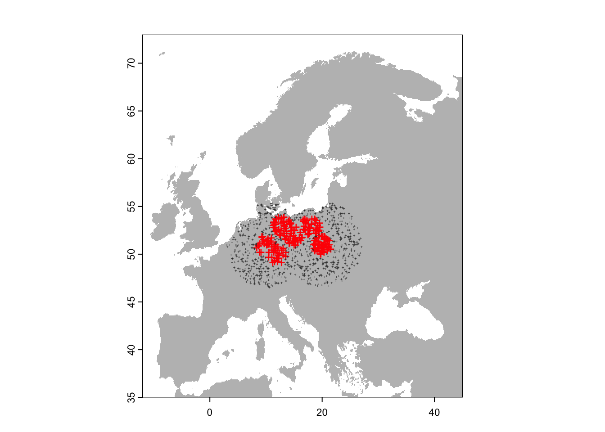
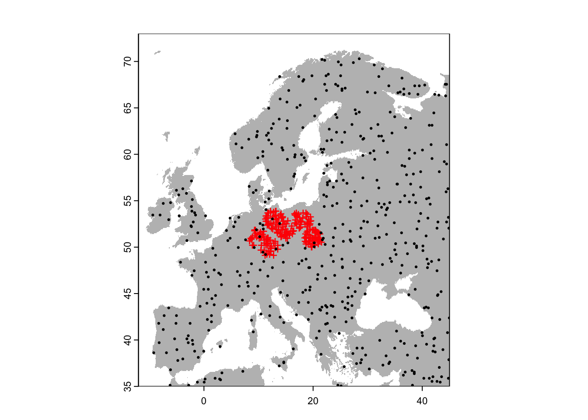
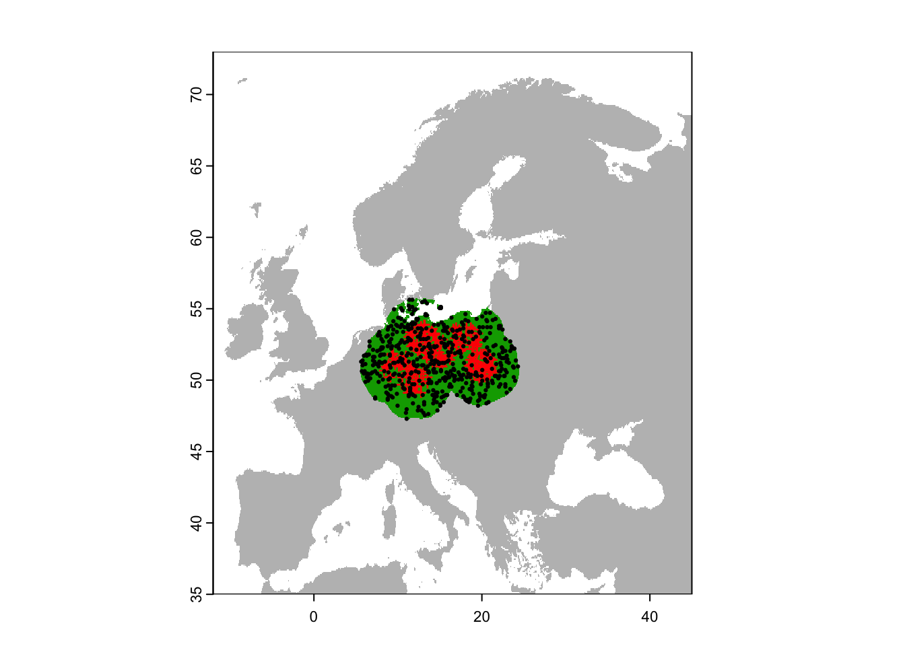
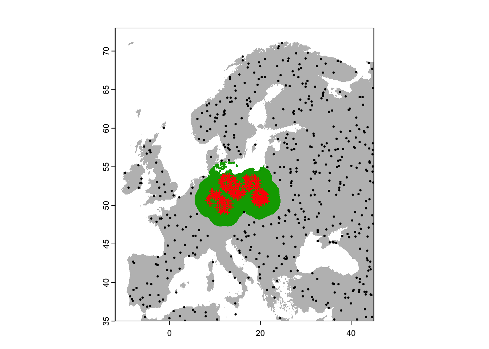

Pseudo-absence and background data
RStudio project
Open the RStudio project that we created in the first session. I recommend to use this RStudio project for the entire course and within the RStudio project create separate R scripts for each session.
- Create a new empty R script by going to the tab “File”, select “New File” and then “R script”
- In the new R script, type
# Session b5: Pseudo-absence and background dataand save the file in your folder “scripts” within your project folder, e.g. as “b5_PseudoAbsences.R”
1 Introduction
In the previous sessions, we have worked with very convenient presence/absence data to train our species distribution models (SDMs). However, as you have seen when downloading your own GBIF data, we often have only presence records available. Absence data are also inherently difficult to get because it requires a very high sampling effort to classify a species as absent from a location. For plants, we would need complete inventories of a larger region, e.g. several 100 m plots placed within larger 1 km sample squares. For birds, we would need several visits to a specific region within the breeding season. In both cases, we could still miss some species, meaning that we do not record the species although present (resulting in a false negative).
But what should we do if absence data are not available? Most SDM algorithms (except the profile methods, see session 6) need some kind of absence or background data to contrast the presence data to. There are different approaches for creating background data or pseudo-absence data (Barbet-Massin et al. 2012; Kramer-Schadt et al. 2013; Phillips et al. 2009), although there is still room for further developments in this field and more clear-cut recommendations for users would be certainly useful. Nevertheless, I hope this tutorial will provide some examples of how to deal with presence-only data. For advice on how many background/pseudo-absence points you need, please read (Barbet-Massin et al. 2012).
In this session, we look at two major ways of creating background/pseudo-absence data:
- random selection of points within study area (including or excluding the presence locations) (Barbet-Massin et al. 2012)
- random selection of points outside of study area (Barbet-Massin et al. 2012)
We will not cover approaches for dealing with sampling bias:
- accounting for spatial sampling bias using target-group selection (Phillips et al. 2009)
- accounting for spatial sampling bias using inverse distance weighting (Kramer-Schadt et al. 2013)
2 Species presence data
I created a virtual species data set with presence points for a dummy species called Populus imagines and sister species Populus spp. The spatial resolution of the data is 5 minutes. You can download the data here or from the moodle page.
Load and plot the data:
library(terra)
library(dismo)
library(raster)
region <- terra::rast('data/Prac5_Europe5min.grd')
sp <- read.table('data/Prac5_presences.txt', header=T)
# Plot the map and data
plot(region,col='grey',legend=F)
points(sp[sp$sp=='Populus_imagines',1:2],pch='+',col='red')
points(sp[sp$sp=='Populus_spp',1:2],pch='+',cex=0.3,col='grey20')
3 Background/Pseudo-absence data selection
We use a lot of methods from the dismo tutorials, which
are worth looking into (see
link here) as well as from the terra tutorials (link
here).
3.1 Random selection of points within study area but excluding the presence location
The dismo package has a function to sample random points
(background data).
# Randomly select background points from study region
bg_rand <- dismo::randomPoints(raster(region), 500)
# Plot the map and data
plot(region,col='grey',legend=F)
points(sp[sp$sp=='Populus_imagines',1:2],pch='+',col='red')
points(bg_rand,pch=19,cex=0.3)
The same could be achieved using the spatSample()
function in terra.
# Random points with terra package:
bg_rand_t <- terra::spatSample(region, 500, as.points=T, na.rm=T)
# Plot the map and data
plot(region,col='grey',legend=F)
points(sp[sp$sp=='Populus_imagines',1:2],pch='+',col='red')
points(bg_rand_t,pch=19,cex=0.3)Both functions will by default sample from the entire study area
independent of the presence points. However, in the
randomPoints() function of the dismo package,
we can provide the presence points as additional argument, and by that
make sure that random background data are not sampled from presence
locations.
# Randomly select background data but excluding presence locations
bg_rand_exclp <- dismo::randomPoints(raster(region), 500, p=sp[sp$sp=='Populus_imagines',1:2])
# Plot the map and data
plot(region,col='grey',legend=F)
points(sp[sp$sp=='Populus_imagines',1:2],pch='+',col='red')
points(bg_rand_exclp,pch=19,cex=0.3)Also, we can define an extent from where random points should be
drawn. By default, this extent is increased by 5% at each side. To
circumvent this, we set extf=1.0.
# Define extent object:
e <- extent(8,24,46,57)
# Randomly select background data within a restricted extent
bg_rand_exclp_e <- randomPoints(raster(region), 500, p=sp[sp$sp=='Populus_imagines',1:2], ext=e, extf=1.0)
# Plot the map and data
plot(region,col='grey',legend=F)
points(sp[sp$sp=='Populus_imagines',1:2],pch='+',col='red')
points(bg_rand_exclp_e,pch=19,cex=0.3)
plot(e, add=TRUE, col='red')
Last, we could also restrict the random samples to within a certain
buffer distance. For this, we first create a SpatVector,
then place a buffer around these and sample from within the buffer. The
buffer can be interpreted as the area that was accessible to the species
in the long-term past. Thus, the buffer helps accounting for
biogeographic history by constraining absence points to those geographic
area that could have been reached by the species given the movement
capacity but excludes other areas. Of course, restricting the absences
to a certain geographic rectangle can achieve a similar tasks but might
be less accurate for complex geographies and large areas. For example,
is Iceland accessible to European species or not?
# Create SpatVector object of known occurrences:
pop_imag <- terra::vect( as.matrix( sp[sp$sp=='Populus_imagines',1:2]) , crs=crs(region))
# Then, place a buffer of 200 km radius around our presence points
v_buf <- terra::buffer(pop_imag, width=200000)
# Set all raster cells outside the buffer to NA
region_buf <- terra::mask(region, v_buf)
# Randomly select background data within the buffer
bg_rand_buf <- dismo::randomPoints(raster(region_buf), 500)
# Plot the map and data
plot(region,col='grey',legend=F)
plot(region_buf, legend=F, add=T)
points(sp[sp$sp=='Populus_imagines',1:2],pch='+',col='red')
points(bg_rand_buf,pch=19,cex=0.3)
3.2 Random selection of points outside of study area
Barbet-Massin et al. (2012) also suggested a method to sample pseudo-absences only beyond a minimum distance from the presence points. This is more of a macroecological approach, suitable for characterising the climatic limits of species. We can also use the buffering approach from above to achieve this.
# Place a buffer of 200 km radius around our presence points
v_buf <- terra::buffer(pop_imag, width=200000)
# Set all raster cells outside the buffer to NA
region_buf <- terra::mask(region, v_buf)
# Now, we set all the buffer cells in the mask to NA
region_outbuf <- region
values(region_outbuf)[values(region_buf)==1 & !is.na(values(region_buf))] <- NA
# Randomly select background data outside the buffer
bg_rand_outbuf <- dismo::randomPoints(raster(region_outbuf), 500)
# Plot the map and data
plot(region,col='grey',legend=F)
plot(region_buf,legend=F, add=T)
points(sp[sp$sp=='Populus_imagines',1:2],pch='+',col='red')
points(bg_rand_outbuf,pch=19,cex=0.3)4 Workflow for joining presence and background/pseudo-absence data
In session b2, we have already learned how to join species data and environmental data (at 10 min resolution) using the Alpine Shrew as example species. Here, we will revisit this example, sample random background data and join these with environmental data to come up with a dataset containing presences and background data as well as the climatic predictors.
# Load the species presence data (here, the data set from session 1):
load('data/gbif_shrew_cleaned.RData')
head(gbif_shrew_cleaned[,1:4])## key scientificName decimalLatitude decimalLongitude
## 1 3824140382 Sorex alpinus Schinz, 1837 48.65200 8.358008
## 2 3784645455 Sorex alpinus Schinz, 1837 46.75777 11.317498
## 3 3873231122 Sorex alpinus Schinz, 1837 46.54926 10.625149
## 4 3881729801 Sorex alpinus Schinz, 1837 47.54320 10.693369
## 5 3892282027 Sorex alpinus Schinz, 1837 46.56076 6.107981
## 6 3902041214 Sorex alpinus Schinz, 1837 47.14652 12.712957# Plot the species presences
library(maptools)
data(wrld_simpl)
plot(wrld_simpl,xlim=c(-12,45), ylim=c(35,73))
points(gbif_shrew_cleaned$decimalLongitude, gbif_shrew_cleaned$decimalLatitude, col='red', pch=19)
You have already downloaded the climate data in session 2 and can simply read it back in. We crop it to European extent.
library(geodata)
# Download global bioclimatic data from worldclim (you may have to set argument 'download=T' for first download, if 'download=F' it will attempt to read from file):
clim <- geodata::worldclim_global(var = 'bio', res = 10, download = F, path = 'data')
# Crop to Europe
clim <- terra::crop(clim, c(-12,45,35,73))What is important to consider is that you kind of arbitrarily chose a scale of analysis by chosing climate data (or other environmental data) at a certain spatial resolution. Here, we chose a spatial resolution of 10 minutes while the species data may actually be at a finer resolution. So, we first make sure that our species data are fit to the spatial resolution, meaning we remove any duplicates within 10 minute cells. We do this by joining the species data with the environmental data (basically, repeating what we had already done at the end of session 2). Then, we can remove the duplicate cells.
# We have already extracted environmental data and raster cellnumbers for the species data
# Remember to remove any rows with duplicate cellnumbers if necessary:
duplicated(gbif_shrew_cleaned$cells)## logical(0)# From now on, we just need the coordinates:
gbif_shrew2 <- gbif_shrew_cleaned[,c('decimalLongitude','decimalLatitude')]We place a buffer of 200 km around the shrew records and sample background points randomly from within the buffer but excluding presence locations (remember that also other pseudo-absence/background data strategies are possible).
# Make SpatVector:
presences <- terra::vect( as.matrix(gbif_shrew2), crs=crs(clim))
# Then, place a buffer of 200 km radius around our presence points
v_buf <- terra::buffer(presences, width=200000)
# Create a background mask with target resolution and extent from climate layers
# Set all raster cells outside the buffer to NA.
bg <- clim[[1]]
values(bg)[!is.na(values(bg))] <- 1
region_buf <- terra::mask(bg, v_buf)
plot(bg, col='grey90', legend=F)
plot(region_buf, add=T, col='grey60', legend=F)
# Randomly select background data within the buffer, excluding presence locations. We sample 10 times as many background data as we have presences.
bg_rand_buf <- dismo::randomPoints(raster(region_buf), length(presences)*10, p=gbif_shrew2)## Warning in dismo::randomPoints(raster(region_buf), length(presences) * 10, :
## generated random points = 0.952272727272727 times requested numberpoints(bg_rand_buf, pch=19, cex=0.2)
points(presences, pch=19, cex=0.5, col='red')
Last, we need to join the presences and background data, and extract the environmental data.
# First, we prepare the presences data to contain a column indicating 1 for presence.
sp_env <- data.frame(gbif_shrew2, occ=1)
# Second, we make sure the background data have the same columns, and indicate 0 for absence.
bg_rand_buf <- data.frame(bg_rand_buf)
summary(bg_rand_buf)## x y
## Min. : 2.75 Min. :40.92
## 1st Qu.: 7.75 1st Qu.:45.08
## Median :11.25 Median :47.08
## Mean :10.92 Mean :47.06
## 3rd Qu.:14.08 3rd Qu.:49.08
## Max. :18.58 Max. :52.58names(bg_rand_buf) <- c('decimalLongitude','decimalLatitude')
bg_rand_buf$occ <- 0
summary(bg_rand_buf)## decimalLongitude decimalLatitude occ
## Min. : 2.75 Min. :40.92 Min. :0
## 1st Qu.: 7.75 1st Qu.:45.08 1st Qu.:0
## Median :11.25 Median :47.08 Median :0
## Mean :10.92 Mean :47.06 Mean :0
## 3rd Qu.:14.08 3rd Qu.:49.08 3rd Qu.:0
## Max. :18.58 Max. :52.58 Max. :0# Third, we bind these two data sets
sp_env <- rbind(sp_env, bg_rand_buf)
summary(sp_env)## decimalLongitude decimalLatitude occ
## Min. : 2.750 Min. :40.92 Min. :0.00000
## 1st Qu.: 7.583 1st Qu.:45.25 1st Qu.:0.00000
## Median :10.917 Median :46.92 Median :0.00000
## Mean :10.762 Mean :47.02 Mean :0.09503
## 3rd Qu.:13.750 3rd Qu.:48.75 3rd Qu.:0.00000
## Max. :18.583 Max. :52.58 Max. :1.00000# Last, we join this combined data set with the climate data.
sp_env <- cbind(sp_env, terra::extract(x = clim, y = sp_env[,c('decimalLongitude','decimalLatitude')], cells=T) )
summary(sp_env)## decimalLongitude decimalLatitude occ ID
## Min. : 2.750 Min. :40.92 Min. :0.00000 Min. : 1
## 1st Qu.: 7.583 1st Qu.:45.25 1st Qu.:0.00000 1st Qu.:1042
## Median :10.917 Median :46.92 Median :0.00000 Median :2084
## Mean :10.762 Mean :47.02 Mean :0.09503 Mean :2084
## 3rd Qu.:13.750 3rd Qu.:48.75 3rd Qu.:0.00000 3rd Qu.:3126
## Max. :18.583 Max. :52.58 Max. :1.00000 Max. :4167
## wc2.1_10m_bio_1 wc2.1_10m_bio_2 wc2.1_10m_bio_3 wc2.1_10m_bio_4
## Min. :-3.347 Min. : 5.193 Min. :24.74 Min. :464.7
## 1st Qu.: 7.577 1st Qu.: 8.075 1st Qu.:31.28 1st Qu.:624.6
## Median : 8.938 Median : 8.561 Median :32.60 Median :658.0
## Mean : 8.916 Mean : 8.593 Mean :32.62 Mean :666.7
## 3rd Qu.:10.579 3rd Qu.: 9.182 3rd Qu.:33.87 3rd Qu.:706.1
## Max. :16.905 Max. :11.446 Max. :41.01 Max. :819.1
## wc2.1_10m_bio_5 wc2.1_10m_bio_6 wc2.1_10m_bio_7 wc2.1_10m_bio_8
## Min. : 7.883 Min. :-13.749 Min. :18.97 Min. :-6.303
## 1st Qu.:21.878 1st Qu.: -4.501 1st Qu.:24.88 1st Qu.: 9.516
## Median :23.524 Median : -2.989 Median :26.09 Median :14.251
## Mean :23.407 Mean : -2.916 Mean :26.32 Mean :12.467
## 3rd Qu.:25.832 3rd Qu.: -1.126 3rd Qu.:27.67 3rd Qu.:16.568
## Max. :31.365 Max. : 8.387 Max. :32.22 Max. :21.641
## wc2.1_10m_bio_9 wc2.1_10m_bio_10 wc2.1_10m_bio_11 wc2.1_10m_bio_12
## Min. :-9.6958 Min. : 3.722 Min. :-9.7354 Min. : 217.0
## 1st Qu.: 0.9651 1st Qu.:15.857 1st Qu.:-0.7275 1st Qu.: 715.0
## Median : 3.4396 Median :17.214 Median : 0.6776 Median : 852.0
## Mean : 5.5439 Mean :17.213 Mean : 0.9196 Mean : 915.8
## 3rd Qu.: 6.3193 3rd Qu.:19.303 3rd Qu.: 2.6122 3rd Qu.:1082.0
## Max. :24.3333 Max. :24.333 Max. :11.0833 Max. :2334.0
## wc2.1_10m_bio_13 wc2.1_10m_bio_14 wc2.1_10m_bio_15 wc2.1_10m_bio_16
## Min. : 28.0 Min. : 4.00 Min. : 4.41 Min. : 77.0
## 1st Qu.: 83.0 1st Qu.: 36.00 1st Qu.:16.23 1st Qu.:226.0
## Median :100.0 Median : 49.00 Median :23.09 Median :269.0
## Mean :107.5 Mean : 50.18 Mean :23.91 Mean :295.8
## 3rd Qu.:126.0 3rd Qu.: 61.00 3rd Qu.:30.10 3rd Qu.:345.0
## Max. :278.0 Max. :119.00 Max. :61.70 Max. :743.0
## wc2.1_10m_bio_17 wc2.1_10m_bio_18 wc2.1_10m_bio_19 cell
## Min. : 25.0 Min. : 31.0 Min. : 36.0 Min. :41864
## 1st Qu.:126.0 1st Qu.:195.0 1st Qu.:146.0 1st Qu.:49690
## Median :164.0 Median :229.0 Median :189.0 Median :53464
## Mean :170.5 Mean :252.7 Mean :198.7 Mean :53285
## 3rd Qu.:206.0 3rd Qu.:290.0 3rd Qu.:241.0 3rd Qu.:56898
## Max. :438.0 Max. :573.0 Max. :526.0 Max. :658234.1 Spatial thinning
When we prepare our distribution data for species distribution modelling, we also need to think about spatial autocorrelation. Using adjacent cells in model building can lead to problems with spatial autocorrelation. As a rule of thumb, data points should be at least 2-3 cells apart.
One way to avoid this is spatially thinning the records, for example
using the package spThin (Aiello-Lammens et al. 2015). Load the package
and look up the help page ?thin.
library(spThin)
# The spThin package requires longitude/latitude coordinates, which we already have.
# Look up the help page and try to understand the function:
?thin
# thin() expects that the data.frame contains a column with the species name
sp_env$sp <- 'Sorex_alpinus'
# Remove adjacent cells of presence/background data:
xy <- thin(sp_env, lat.col='decimalLatitude',long.col='decimalLongitude',spec.col='sp', thin.par=30,reps=1, write.files=F,locs.thinned.list.return=T)## **********************************************
## Beginning Spatial Thinning.
## Script Started at: Fri Dec 23 12:27:36 2022
## lat.long.thin.count
## 758
## 1
## [1] "Maximum number of records after thinning: 758"
## [1] "Number of data.frames with max records: 1"
## [1] "No files written for this run."# Keep the coordinates with the most presence records
xy_keep <- xy[[1]]
# Thin the dataset - here, we first extract the cell numbers for the thinned coordinates and then use these to subset our data frame.
cells_thinned <- terra::cellFromXY(clim, xy_keep)
sp_thinned <- sp_env[sp_env$cell %in% cells_thinned,]
# Plot the map and data
plot(bg, col='grey90', legend=F)
points(sp_thinned[,1:2],pch=19,col=c('black','red')[as.factor(sp_thinned$occ)], cex=0.3)
Finally, don’t forget to save your data, for example by writing the final data frame to file or by saving the R object(s).
save(sp_thinned,file='data/gbif_shrew_PresAbs_thinned.RData')Alternative: The thin() function can
take quite long and needs a lot of memory space. A useful alternative
function for spatial thinning is gridSample() in the
dismo package.
xy <- dismo::gridSample(sp_env[,c("decimalLongitude","decimalLatitude")], bg,chess='white')
sp_thinned2 <- merge(xy,sp_env,by=c("decimalLongitude","decimalLatitude"))
# Plot the map and data
plot(region, col='grey90', legend=F)
points(sp_thinned2[,1:2],pch=19,col=c('black','red')[as.factor(sp_thinned2$occ)], cex=0.3)
#-----
# Thinning to larger grid
xy <- dismo::gridSample(sp_env[,c("decimalLongitude","decimalLatitude")], aggregate(bg,2), chess='white')
sp_thinned3 <- merge(xy,sp_env,by=c("decimalLongitude","decimalLatitude"))
# Plot the map and data
plot(region, col='grey90', legend=F)
points(sp_thinned3[,1:2],pch=19,col=c('black','red')[as.factor(sp_thinned2$occ)], cex=0.3)
Exercise:
In practical b1, you have downloaded your own GBIF data. Carry out the pseudo-absence data selection for this species, and run a GLM analysis.
- Decide on a pseudo-absence/background data strategy for your species (in the simplest case, just follow the strategy used in the example workflow in section 4). Prepare your dataset with presences, pseudo-absences and the corresponding climate data at those locations (following the workflow in section 4)
- Use the data and build a GLM. Remember the different steps of checking for multicollinearity, building the full model and simplifying it.
- Assess the predictive performance of that model.
- Make predictions to current climate. Decide whether you want to make predictions to the entire globe or to a more restricted geographic area (e.g. the continent where your species occurs)?